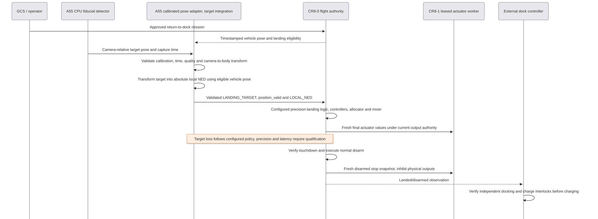

RZ/V2H Single-SoC Autonomous Drone Solution
Solution positioning: one RZ/V2H central compute SoC for perception, autonomy, flight control, and deterministic I/O. External sensors, cameras, BMS/power electronics, radios, ESCs, motors, and payload controllers remain part of the aircraft. Present this as a target reference architecture, not a production-ready or certified product.
Contents
Executive summary
One platform for onboard intelligence and real-time flight control. RZ/V2H combines Linux application cores, DRP-AI3 inference and two Cortex-R8 cores. That lets a customer design one central flight computer with perception, mission logic, PX4 flight control and supervised aircraft I/O.
The commercial opportunity is integration: fewer central compute components, short on-chip communication paths, and a coordinated release for flight, vision and payload software. Engineers can start with Renesas Linux/AI tools, ROS 2 examples, PX4 interfaces and available module/carrier resources while the customer board is being designed. The ecosystem guide identifies exactly which assets can be reused and which integrations remain customer work.
The Renesas datasheet provides a strong hardware basis: quad A55, dual R8, four CSI-2 inputs, and DRP-AI capability up to 8 dense/80 sparse TOPS. Application throughput, system power, latency and flight endurance depend on the released workload and aircraft. They are measured outcomes, not deductions from the TOPS rating.
This is a product-development architecture. The current NuttX/PX4 port and RDK examples supply useful starting evidence, but do not yet demonstrate a complete flight-qualified three-domain aircraft.
Reader |
Start here |
What the document enables |
|---|---|---|
Customer/product lead |
This solution brief and §4 |
Select a use case and agree a measurable evaluation |
Software/AI lead |
Choose a coherent profile, retrieve sources and reproduce a demo |
|
Hardware/system engineer |
Start power, memory, interfaces, resource allocation and board review |
|
Flight/BSP engineer |
Locate build inputs, implement gateways and plan bench verification |
1. What single-SoC means
Figure 1-1: RZ/V2H single-SoC autonomous drone system architecture and interface boundary

1.1 Included on the central compute
Capability |
RZ/V2H domain |
Target software |
|---|---|---|
Camera perception and AI inference |
Cortex-A55 + DRP-AI3 + DRP |
Linux media, supported OpenCV acceleration, compiled neural models, customer-integrated VIO/SLAM and obstacle perception |
Mission autonomy and networking |
Cortex-A55 |
ROS 2, aerial mission/planning applications, uXRCE-DDS agent, MAVLink/network/payload services |
Flight management and control |
CR8-0 |
NuttX + PX4 estimator, commander, navigation, rate/attitude control and failsafes |
Deterministic aircraft I/O |
CR8-1 |
NuttX target I/O image for RC, battery, CAN, safety inputs and leased ESC/servo outputs |
The target architecture does not use the Cortex-M33 core.
The architecture applies to customer-designed RZ/V2H platforms. The customer selects the memory, storage, power, sensors, transceivers, connectors, Linux distribution, and board support needed by the aircraft.
1.2 Still external to the SoC
LPDDR, eMMC/SD/xSPI storage, PMICs, oscillators, reset, and transceivers.
IMUs, barometer, magnetometer, GNSS/RTK, range and optical-flow sensors.
Navigation and payload cameras, lenses, triggers, and optional thermal sensor.
Battery cells, BMS, power monitor, regulators, PDB, wiring, and protection.
RC receiver, telemetry radio, cellular/Wi-Fi modem, antennas, and Remote ID.
ESCs, motors, servos, gimbal controller, lighting, buzzer, and other payloads.
Use “single central compute SoC” when the audience might interpret “single-chip drone” literally.
1.3 Hardware delivery options
Route |
Customer advantage |
Design responsibility |
|---|---|---|
Discrete RZ/V2H board (Selected for Production) |
Own mechanical layout, thermal path and production BOM using the RDK reference architecture |
Qualify high-speed memory, power sequencing, pinmux, boot and the complete customer board |
SOM + custom carrier (Evaluation Alternative) |
Reuse a supplier’s compute, memory and local power implementation; concentrate on aircraft interfaces |
Verify module pinout, thermal limits, BSP, lifecycle, debug and CR8 access; design and qualify the carrier |
Production architecture decision: The production aircraft uses a fully custom discrete RZ/V2H board derived from the RDK reference architecture. Reviewed source and bounded port evidence provide starting points; the dual-CR8 software receipt does not establish validated physical sensors, actuators, power sequencing or a qualified image pair. Customer-board pinmux, clocks, power/reset and electrical behavior require their own qualification.
OneKiwi’s RZ/V2H SOM is an available supplier option with carrier and Linux BSP resources for evaluation. Request the released module design package before laying out a board; see the ecosystem guide for its published specification and version differences. A SOM can reduce high-speed design work, but savings in schedule, cost and weight require a customer-specific comparison. Connector appearance alone does not establish CM4, Jetson, SO-DIMM or SMARC electrical compatibility.
2. Reference solution
Figure 2-1: Target solution — perception to propeller coordination on one central SoC

The architecture protects flight authority with a simple rule: Linux proposes; PX4 decides; the I/O core applies only fresh, valid, armed output commands. Linux or camera failure can remove autonomy features, but cannot legitimately write motor outputs. The two R8 cores still share the SoC, so this is software and execution-domain separation—not independent hardware redundancy.
Figure 2-2: Perception-to-propeller data flow and safety interlock architecture

The system specification defines device connections and the software specification defines the intent gateway, time synchronization and actuator lease. These are target contracts: on-chip messaging still needs measured deadlines, cache handling, fault containment and restart tests.
2.1 RDK pre-development sample
The RZ/V2H RDK can shorten evaluation before customer hardware is available. The current reference ecosystem provides Ubuntu 24.04, ROS 2 Jazzy, Linux 6.10, DRP-AI/ROS 2 packages, and an RDK PX4 v1.16 FreeRTOS/ROS 2 Humble drone sample. Those are separate, versioned reference profiles; they are not one production software release and shall not be mixed without a compatibility test.
The RDK and this repository’s NuttX/PX4 board targets remain pre-development samples. They do not define customer pins or interfaces, and the stock RDK has no usable analog battery input. See the RZ/V2H ecosystem guide for repositories, Yocto/Ubuntu/ROS 2 versions, AI tooling, and YOLO guidance.
3. External-device story
3.1 Battery and BMS
The preferred smart BMS connection is differential CAN when the battery is remote or the harness is electrically noisy. Use DroneCAN in its supported Classic CAN mode when the selected devices support it, or freeze a documented vendor protocol that explicitly selects Classic CAN or CAN FD. For a short board-local smart-battery link, SMBus Smart Battery Data is appropriate. SMBus resembles I2C electrically but has a defined battery command and timing contract; it is not “read any I2C registers.”
CR8-1 collects pack voltage/current, remaining charge, cell and temperature information, warnings, and source health. A customer board may add a protected ADC front end or an external digital power monitor when its safety assessment calls for an independent measurement. PX4 on CR8-0 owns warning, return, and landing policy; the BMS continues to own cell and pack protection.
3.2 Cameras, VIO, and DRP-AI3 perception
A customer board can allocate the SoC’s four CSI-2 receivers to forward stereo, a downward navigation camera, and an inspection payload. Alternative surround layouts are possible; actual field of view, occlusions and range coverage must be designed. Four inputs alone do not provide full-sphere obstacle avoidance.
The development path is tangible: start with a supported camera and Renesas detector sample, add calibrated time-correlated VIO, then integrate an aerial planner. Renesas publishes EVK model measurements, including 19.3 ms inference for YOLOv5s; the ecosystem benchmark section records the test tuple and separates inference from camera-to-control latency.
Direct CSI-2 is useful for short local links. GMSL/FPD-Link or other SerDes can serve remote camera heads when the selected driver, CSI format, link budget, synchronization and harness are qualified. USB and Ethernet cameras offer additional integration options. The system specification provides candidate parts and the design checks; none is universally immune to motor EMI.
3.3 Precision landing and docking
Drone-in-a-Box is a target application built from a downward camera, calibrated target detection, range/vehicle state, PX4 precision landing, and a separately designed charging/docking interface.
Use an A55 CPU AprilTag detector or a separately trained and compiled neural
detector. AprilTag is not inherently a DRP-AI model. The existing PX4
precision-landing interface
accepts MAVLink LANDING_TARGET; a DDS landing-target path needs explicit
integration. Sub-10 cm touchdown repeatability remains a candidate customer
goal to validate across wind, lighting, target loss and approach conditions.
Figure 3-1: Autonomous precision landing and docking sequence

3.4 Gimbal and payload
A smart gimbal with its own stabilizing controller is preferred. MAVLink Gimbal Protocol v2 over UART or IP carries pointing commands and status. A55 payload software arbitrates operator, mission, and AI-tracking requests; CR8-0 supplies trusted vehicle attitude/time and may inhibit actions by flight state. Gimbal power uses a separately protected payload rail so a stall or reboot cannot brown out flight compute.
3.5 Flight sensors and actuators
SPI is the normal choice for high-rate board-local IMUs.
I2C/I3C fits short, lower-rate local sensors; UART or CAN fits GNSS, LiDAR, air-data, and remote avionics.
The production target selects CR8-1 DShot primary and PWM400 backup, both requiring qualification under a CR8-0 output lease. Current
pwmsource is an inhibited PWM candidate; the DShot backend and protocol-specific adaptation remain pending.Each ESC needs a defined local command-timeout safe state; feedback may return RPM, voltage, current, temperature, and faults.
The full interface and failure contract is in the system specification; software ownership and state machines are in the software specification.
3.6 Predictable degraded operation
Figure 3-2: Multi-domain operational modes and graceful fallback state machine

The target progresses through boot/output inhibition, readiness, guarded arming, operation and disarming. In flight, PX4 responds to the available estimates and configured policy. Loss of vision does not guarantee position hold or return-to-launch if no usable position source remains.
A CR8-0 fault expires the CR8-1 output lease; loss of CR8-1 requires actuator timeout and any independent hardware protection. Stopping thrust can prevent runaway actuation but can also cause a crash. Any parachute/termination system must be separately selected and qualified, and remain effective during total SoC power loss.
4. Customer value
4.1 Why choose this architecture?
Customer need |
RZ/V2H opportunity |
Evidence for the buying decision |
|---|---|---|
Compact integrated avionics |
Application, AI and real-time compute reside on one SoC |
Compare complete populated compute assemblies, including memory, regulators and cooling |
Local perception without continuous cloud processing |
Run compiled models alongside Linux camera services |
Demonstrate accuracy and frame age on customer imagery |
Reuse familiar development tools |
Linux/Yocto, ROS 2, PX4 interfaces and NuttX source |
Rebuild a pinned example and inspect the resulting source/license inventory |
Product-specific payloads |
Camera, gimbal, BMS and radio interfaces are explicit |
Exercise the actual selected devices and fault behavior |
Control over the product lifecycle |
Own board support, manifests, calibration and updates |
Demonstrate reproducible builds and a recoverable multi-image update |
Compared with a companion computer plus a separate flight controller, the single-SoC route offers consolidation and on-chip communication. A separate flight controller offers a distinct compute/power failure boundary. Choose using the aircraft requirements and measured total-system results, not a comparison of sparse TOPS against unrelated dense or GPU ratings.
4.2 Customer evaluation: three demonstrations
Demonstration |
Reuse now |
Customer-facing evidence |
|---|---|---|
See: camera to AI result |
RDK Linux/ROS 2 and a locked DRP-AI detector example |
Customer-scene accuracy, annotated recording, frame drops, latency and temperature |
Control: sensor to supervised output |
Host-tested/build-clean dual-CR8 producer and lease/worker candidate; complete product services and physical qualification |
Timestamped physical sensors, battery/RC health and scoped safe-output behavior without propellers |
Integrate: autonomy with fault handling |
Customer VIO/planner and validated A55↔CR8 gateway |
Joint-load timing, rejected stale intent, Linux restart and continued eligible PX4 operation |
The dual-CR8 architecture and engineering design detail the Control evaluation for one ICM-45686, BMM150, BMP390, M10, TFmini Plus and four motors. Battery monitoring, persistent calibration, command/kill paths and diagnostics are part of full acceptance. A partial props-off check with battery disabled or volatile calibration remains a bring-up milestone. Configured disarmed PWM pulses are not electrically inactive outputs; startup/standby inhibition is verified at the connector. This two-core evaluation does not demonstrate camera autonomy or flight qualification. The approved seven-module requirements registry defines the props-off-first acceptance contracts; hardware selection remains gated.
Agree the pass criteria before evaluation. Report model inference, complete perception latency, transport latency and actuator response separately. Measure compute energy and complete aircraft energy before claiming endurance gains; payload and propulsion often dominate the aircraft budget.
4.3 Honest trade-offs
One SoC is a common power, clock, thermal, and silicon failure domain.
Integration increases board-design and bring-up complexity.
Linux, PX4, CR8 I/O, AI models, and devices still need coordinated lifecycle and compatibility management.
A flight-ready product requires persistent storage, secure boot/update, target-proven IPC, electrical qualification, and extensive fault testing.
5. Target use cases
Use case |
Reference configuration |
Value delivered |
Validation gate |
|---|---|---|---|
Autonomous Drone-in-a-Box |
Downward camera, target detector, range aid, BMS and docking controller |
Repeatable approach and docking with energy-aware missions |
Touchdown error distribution, target-loss response and protected charge interlocks |
Surround obstacle perception |
Customer-defined multi-camera layout and depth/planning pipeline |
Wider situational awareness with onboard processing |
FOV/occlusion coverage, depth error and end-to-end reaction distance |
GPS-denied inspection |
Calibrated camera/IMU VIO with range/flow aids as appropriate |
Local navigation where GNSS is unavailable |
Drift, time sync, estimator transitions and environmental limits |
Industrial asset inspection |
EO/IR camera, stabilized gimbal and defect model |
Local image analysis and selective data upload |
Image/model accuracy, payload interoperability and power disturbance tests |
Aerial mapping and survey |
Global shutter, GNSS/RTK and capture-event timing |
Time-correlated imagery and position records |
Camera-center/geotag error, calibration and storage throughput |
Public-safety observation |
EO/IR gimbal and region-appropriate secure links |
Onboard observation and adaptable backhaul |
Security, privacy, RF and operational approval |
Airframe, payload, endurance, range, link availability, and regulatory status remain customer- and configuration-specific.
6. Message and claim guide
6.1 Recommended messages
“One RZ/V2H central compute SoC from perception to flight control.”
“Linux and DRP-AI3 for vision; dual Cortex-R8 for flight and I/O.”
“PX4 retains flight authority while Linux autonomy supplies bounded intent.”
“Connect smart batteries, cameras, gimbals, radios, sensors, and ESCs using standards-based interfaces.”
“A reference architecture for consolidating companion compute and flight compute—not a claim that external avionics disappear.”
6.2 Claims requiring qualifiers
Topic |
Recommended form |
Avoid |
|---|---|---|
AI performance |
“DRP-AI3, up to 80 TOPS with Renesas pruning conditions; workload results require measurement.” |
A naked TOPS number implying application throughput |
Cooling/efficiency |
“Designed for power-efficient embedded AI; thermal solution depends on workload and enclosure.” |
“No cooling required” without a thermal test |
Safety |
“Separated Linux, flight, and I/O execution domains with fail-silent target behavior.” |
“Physically isolated,” “cannot fail,” or a certification claim |
Single chip |
“Single central compute SoC.” |
“The entire drone is one chip” |
Power/weight/cost |
“Potential reduction by removing a separate companion compute board.” |
Universal percentages or savings without a measured comparison |
Autonomy |
“Target reference architecture for onboard perception and autonomy.” |
“Fully autonomous/production ready” before system validation |
Radio/regulation |
“Supports integration of region-appropriate modules.” |
Fixed range, universal cellular support, or compliance before approval |
6.3 Optional-feature caution
RZ/V2H ordering codes vary in optional GPU, ISP, and security features. Sales and engineering material shall identify the exact selected part before claiming those blocks. “RZ/V2H family supports” is not proof that a specific BOM does.
6.4 Safety and market qualification
Define the jurisdiction, aircraft and operation before selecting an assurance route. FAA waiver guidance and EASA specific-category guidance are starting references, not approvals for this design. Dual cores, watchdogs, PX4/NuttX or a parachute do not establish a DAL, SAIL or failure probability.
The system specification retains a preliminary hazard/containment analysis and the evidence needed to develop the aircraft safety case.
7. Evidence and productization
7.1 Evidence boundary
The repository’s current implementation status and named hardware evidence are maintained in the NuttX port status and PX4 HAL status. The system specification and software specification retain the customer-platform gaps and target requirements. RDK and repository results are pre-development evidence; they do not support a production or flight-ready claim.
7.2 Productization sequence
Freeze aircraft requirements, safety target, exact SoC ordering code, and external-device ICD.
Prove CR8-0 physical sensors, timing, storage and reset; keep local motor outputs disabled in canonical dualcr8.
Qualify the CR8-1 sole-output-owner candidate; complete DShot, BMS/RC/CAN, command/kill and selected safe-timeout contracts.
Validate inter-core reset, cache, corruption, overload, and latency behavior.
Integrate A55 Linux, cameras, DRP-AI3, DDS, VIO, mission, gimbal, and network.
Run power, thermal, EMI/EMC, security, HIL, tethered flight, envelope expansion, and endurance campaigns.
Publish performance and customer claims only from the released configuration and named test evidence.
Sources
RZ/V2H NuttX port status
RZ/V2H PX4 HAL status
RZ/V2H IPC architecture